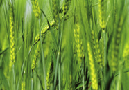
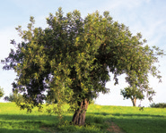
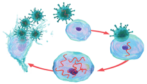

Copia en tu cuaderno y completa la siguiente tabla.
Eucariotas/
Procariotas
Unicelulares/
Pluricelulares
Autótrofos/
Heterótrofos
Moneras
✔
✔
✖
✖
✔
Protoctistas
✔
✔
✔
✔
✔
Hongos
✔
✖
✔
✖
✔
Plantas
✔
✖
✔
✔
✖
Animales
✔
✖
✔
✖
✔
¿Qué tienen en común y en qué se diferencian estos reinos?
a. Animales y plantas
b. Protoctistas y moneras
c. Hongos y plantas
d. Protoctistas y plantas
Busca imágenes de seres vivos que pertenezcan a cada uno de los cinco reinos. Elabora una presentación con sus principales características e indica las fuentes consultadas.
Responde a las siguientes preguntas sobre los virus.
a. ¿Los virus son seres vivos o seres inertes? Explica tu respuesta.
b. Copia este dibujo en tu cuaderno y rotula las partes numeradas.
c. Esta imagen representa qué ocurre cuando un virus entra en contacto con una célula. ¿Qué sucede en cada etapa?
d. ¿Por qué se afirma que los virus son parásitos obligados?
e. Explica cómo realizan la función de nutrición los virus.
f. Investiga cuáles de estas enfermedades son producidas por virus: tuberculosis, poliomielitis, sarampión, paperas, cáncer de cuello de útero, COVID-19 y gangrena. Cita las fuentes consultadas.
g. ¿Por qué los antibióticos no son efectivos para combatir enfermedades virales? Busca información sobre ello, indicando las fuentes consultadas.
h. ¿Crees que es necesario vacunarse para prevenir enfermedades? Debatid en clase sobre ello.
Estructura del virusConejo en la hierba

Campo de trigoÁguila pescadora en vuelo

Árbol verde frondoso

Ilustración de la respuesta inmune